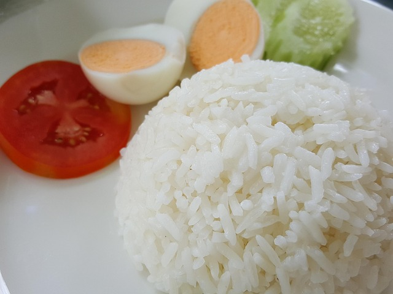

Imagen de arroz blanco recuperado de:
Pixabay.
El arroz blanco es otra receta fundamental en la cocina. En su forma mas
simple aun puede contribuir todo a un plato.
Ingredientes
Una taza de arroz blanco.
Tres tazas de agua.
Una olla grande con tapa.
Sal y ajo al gusto.
Preparacion
Lavar el arroz blanco en la olla hasta que salga el almidon. Sabras
que esta listo cuando el agua sea mas o menos transparente.
Colocar las 3 tazas de agua y ponerlo al fuego medio hasta que hierva.
Pon el fuego a alto. Aqui deberias poner la sal o ajo. Espera 15
minutos.
Pon el fuego a bajo, move con una cuchara el arroz para que esponje y
deja cerrada la olla. Espera 5 minutos.
Apaga el fuego y espera almenos 5 minutos mas para abrir la olla.
Servir.
El motivo por el cual se deja cerrada la olla tanto al final es para que
el arroz se ahume todo el tiempo posible. Si puedes cerra la olla tambien
al fuego alto. Los dos pasos mas importantes es mover el arroz y cerrar la
olla.